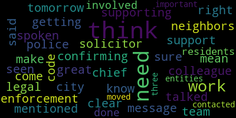

AI-generated transcript of Medford, MA City Council - Dec. 19, 2017 (Unofficially provided by MT)
English | español | português | 中国人 | kreyol ayisyen | tiếng việt | ខ្មែរ | русский | عربي | 한국인
Back to all transcripts
[Caraviello]: 14th regular meeting of Medford City Council of Medford, Massachusetts. Mr. Clerk, please call the roll. Councilor Dello Russo. Present.
[Clerk]: Councilor Falco. Present. Councilor Knight. Present. Councilor Lungo-Koehn. Present. Vice President March. Present. Councilor Scarpelli. Present.
[Caraviello]: President Caraviello. Present. Please rise and salute the flag. I pledge allegiance to the flag of the United States of America, and to the republic for which it stands, one nation, under God, indivisible, with liberty and justice for all. Full suspension of the rules by Councilor Lungo-Koehn, seconded by Councilor Scarpelli. Councilor Lungo-Koehn.
[Lungo-Koehn]: Thank you, President Caraviello. We do have a resident that would like a few minutes to speak. Give us an update on what's going on in the neighborhood.
[Obola]: Name and address of the record, please. Yes, my name is Farina Buller. I live at 9 Alfred Street in Medford. I was here a couple weeks ago, and I'd just like to personally thank everybody here for getting this ball rolling in the right direction. I had a positive attitude about this. We got a cease and desist order, and I thought we were gonna give this thing a nice nap and have a nice Christmas, but unfortunately, I have some bad news. First of all, nothing has stopped, okay? They continually work, and I have the documentation, the videos. They have continually worked for every Saturday since I've been here. I had the Medford Police come by on a Saturday, December 9th, door wide open, grinding. Councilor Scapelli here drove by. Luckily, he just told me and saw them working on a Saturday. So it's been very frustrating, and I know things aren't gonna happen in one day, two days, so I didn't wanna come here a week later. I figured I'd wait a week or so and see what's going on. Well, things have gotten progressively worse over there. They're still coming in early in the morning, but now what they do is they park their cars around the other side of the building, because thinking that I don't see any cars there, that they're not working. Another problem I have is I went down to the building commissioner's office today, and what I wanted was some clarification on a cease and desist order, which I looked up in the dictionary, it says stop work. I'm not an attorney, I'm just saying that. So Mr. Mowgli wasn't there, but when I went there today, John Bufuso was there. And I asked him a few questions. My first question was, do you have a copy of the cease and desist order? I don't have it. I said, well, you know who has it? He says, Paul has. Can I speak to Paul? Paul ain't in right now. And then I asked him for some clarification, which, you know, really concerns me. And he said, Paul isn't here. So, I was a little aggravated at this point. because I took time off of my work, not that I get paid millions of dollars, but I took time out of my day to go over it just to get something resolved. I went up to the mayor's office, unannounced, which I don't blame her. She was in a meeting, sorry, but she couldn't speak to me. That's totally understandable. I didn't even expect to see her. I just wanted to let her know I was there. She was nice enough to have called Mr. Moakley, who I just left the office, wasn't in, came right up. I tried to get some clarification on this. He couldn't give me a straight answer on anything. Everything's kind of like a riddle to me on the answers I got back. One of the things that really, I need a clarification on this. I have this paper here from the Board of Appeals that was written, okay? And I highlighted what it says because I keep getting the wording that, oh, this, even though it was written to Steve Nardone, it's transferable to the tenant who's over there. Okay, and. With that being said, I just wanna go back a step. Mr. Moakley, in his words, agreed that this company, J.F. White, is in violation of doing this type of work. Those are his words, okay? You know, this place was supposed to be for parking, for storage, not for industrial, heavy-duty pipe manufacturing. But with that being said, what really bothered me was it says on the paper here, It says, the Board of Appeals also calls the attention of the owner of the application that General Laws Chapter 48, Section 11, the last paragraph, provides that no variance or special permits of any extension, modifications, or renewal, therefore, shall take effect until a copy of the decision bearing the certification of the town within 21 days of it being filed. So, I'm not an attorney, but this pretty much sounds like this isn't transferable, okay? But what I'm asking you is why, when I come here in front of you guys, you, excuse me, in front of everybody, you gave me the cease and desist order. Now Mr. Moakley tells me the cease and desist order was given and he couldn't give me a copy of it, but he said it was no work will be allowed before five o'clock, I'm sorry, before eight o'clock in the morning and not after five o'clock in the afternoon. I mean, does that sound reasonable? That's worse than useless. Having somebody that's supposed to be a cease and desist would mean stop work. So you're saying they can only work between eight and five. I don't know what to say. You guys helped me out so much and now I'm up against this here and I don't understand the wording or any of this. But it doesn't make no sense to me at all and most importantly I just want to say I have 40 people that I'm representing today that are not here because they don't even know I'm coming today because I don't have time today to go there and see all of them. But they all support me and we're all together on this. And it's really aggravating that A company, J.F. White, can't find a place, and that's another thing. I said, well when are they coming out? When are they leaving? He says, well they said by the end of February. Do you have a date? No. So again, we're at hearsay. They're supposed to be out at the end of February. A company, J.F. White, can't find a place to do a commercial business, heavy pipe manufacturing besides a residential neighborhood. I'm not buying it. And I need all of your support, maybe something we can do to get this resolved, because, you know, we have rights in this town, in this city, and our rights in my neighborhood, a residential neighborhood, are being violated on a daily basis. And it's disgraceful, disgraceful, that I have to go down there and argue with somebody down in the building department, John Bufuso told me they have a right to work on a Saturday. I said, did you read the ordinance? He goes, yeah. Five minutes later, I see Paul. He says, oh no, they can't work on a Saturday. I mean, does the left hand know what the right hand's doing? This is the guy that's been out there five times. Five times he's been out there. He hasn't seen any work. Hate to tell ya, For the last two weeks, Winchester Street's been closed off. No one can go up there, okay? And the problem's on Alfred Street. Read the paperwork, Alfred Street. Not Winchester Street, that's where you enter it. All the noise is coming out of Alfred Street. So, I'm at wit's end here. I don't know why a company is coming into a town that did this here to make money, do their pipe work, and get out, that they have no respect for the neighbors, no respect for the city, and why is the city allowing something like this to happen? I don't get it, I don't get it. And if you all could help me in some way, I very much appreciate it.
[Lungo-Koehn]: Through the Chair, if I could ask a question. Council Member Crenn. Through the Chair, thank you, President Caraviello. So they're working six days a week with the door open, are they still doing work outside?
[Obola]: Yes, they're still doing work outside. I have video documentation and I'd just like to make it for the record that Mr. Moakley, I saw him up in the Mayor's office, I wanted to show him the video. I said, well they're out there right now. You wanna see the video today at 1.30? Here's some more grinding. I mean, I don't wanna have to play this for you. I don't wanna see it. Of course you don't wanna see it. You know, I mean, how can you have a cease and desist order and say they can only work from eight to five? Does that sound, seriously, I'm asking you all, does that sound fair or reasonable? That's a slap in the face to me and all the other people that signed this paper.
[Lungo-Koehn]: Through the chair, it seems to me our 40 neighbors that are dealing with this have a right to be very frustrated and to get a date of maybe February.
[Obola]: And if, not even something, if. I said, so did they give you anything in stone? Well, they said. I go, so that's hearsay, you know, hearsay. I mean, they're a big contractor. I don't even think they're aware of what's going on, to be honest with you. That's what I think, because I don't think a company that big would want to be embarrassed so much for making fools out of himself in a city, in a residential neighborhood. I just can't believe it. What I can believe is down at that building department that someone's not doing their job. How come he comes by and he sees it, and this guy comes by five times when the road's closed on Winchester Street, and he's never seen nothing? I live next door, I'm not even home all day, and when I go home, that's all I see and hear. So, you know, I'm not imagining anything, and neither are all the neighbors, you know?
[Caraviello]: I'd be happy to meet you here tomorrow at nine o'clock at the building office and go up there with you with the building inspector.
[Obola]: Well, thank you very much. I just want to know that you're well respected by me and I find that everything you've done was being very disrespected and I just wanted you guys to acknowledge that. Thank you very much. If you'd like to meet me here tomorrow morning when the office opens. I'd be there at nine o'clock, no problem.
[Caraviello]: I'll meet you there the first thing in the morning and we'll go up there together.
[Obola]: Thank you very much. Everybody have a nice Christmas. Thank you for your time.
[Lungo-Koehn]: I think we need to get some clarification from ourselves. I know Paul's responded to me in the last week because I've had some of your neighbors actually call and email with additional complaints, like you're saying. It's work hasn't stopped. It's going on at all hours, inside, outside. I did ask a couple questions to the building department. He did answer me back, but you're right, if we ask for a cease and desist, why are they allowed to operate?
[Obola]: More importantly, what I'm concerned, can anybody get a clarification on if this ordinance was specifically for Nardone Electric, okay? And he doesn't operate the property. And it says right in here, that this can't be changed by anything unless it's in 21 days of writing. How is this happening? I don't get it. I don't get that at all. I'm not an attorney.
[Lungo-Koehn]: Maybe we could give that to our messenger and get an opinion from our city solicitor, and if that's the case, if it's non-transferable, then the permit should be pulled, although we voted to cease and desist on this a couple weeks ago.
[Dello Russo]: Point of information, Councilor Dela Russa. The conclusion was reached some weeks ago by the building commissioner that it's not transferable. He made that clear. Those are the grounds under which he's issued the cease and desist. He's told me otherwise. So it would be my... uh, recommendation that, uh, we, uh, require the building commissioner to, uh, pursue this, uh, to the greatest extent, uh, the law allows him, uh, to, uh, uh, deal with it.
[Caraviello]: I mean, maybe you can work that out. Mr. O'Rourke, tomorrow morning we'll, uh, get the bottom of it tomorrow morning.
[Obola]: Thank you. Thank you very much.
[Caraviello]: Um, for now.
[Scarpelli]: I was confirming with my, I mean supporting my colleague when we talked about getting this to the city solicitor. I think that the message is clear. I think that we've all spoken. We support the neighbors. Like I said, we've seen the work and we've mentioned that. So I think that if we can do that, I know it's great that you can come out here tomorrow, but I think we need our legal team to work with our code enforcement. to make sure both of them are doing what's right. And if we need, then you need to get the chief of police involved and do what needs to be done for those residents. I think it's very important that all three entities are contacted.
[Marks]: Vice President Mox. Thank you, Mr. President. I agree with my colleagues, but I'd like to take it one step further. I think we need to create an emergency committee of the whole meeting and meet with the city solicitor, as was mentioned, the building department, John Bavuso, and the building commissioner, Paul Moki, either meet on site or here at City Hall. I would prefer that we meet on site, Mr. President, and this needs to take place immediately. So, I would ask that I would ask that you set up an emergency meeting, Mr. President, to go on site. This is, as Fran mentioned, this has been going on far too long. I thought the cease and desist order, in my opinion, how it's always worked in this city, that stops all work.
[Obola]: Exactly. That's why I couldn't understand why you would have a cease and desist from 8 to 5.
[Marks]: And the reason why you do that is to bring all parties to the table, because once you stop work, Jeff White's going to say, what's going on? And they're going to want to be at the table. Exactly. If you allow them to do business as usual between those hours, because in my opinion, the city didn't do you any favors eight to five.
[Obola]: Oh, you guys did your job. I just want to tell you, I'm very happy. And unfortunately, I waited and I knew it wasn't going to happen overnight, but nothing has changed. Nothing. That's why I'm here. I'm not here to ruin everybody's day.
[Marks]: And our job is to make sure the residents have a peace of mind and a quality of life that they deserve. So I would ask, Mr. President, that you call for that meeting immediately. I will do that first thing in the morning. Thank you, Mr. President.
[Falco]: Councilor Falco. Thank you, Mr. President. Brian, I thank you for coming down again to give us an update. It's my pleasure, Mr. Falco. You live in this neighborhood. You experience this on a daily basis. And this is a quality of life issue. You shouldn't be impacted like this. Absolutely. And your neighbors shouldn't either. You know, I agree with my colleagues. I think an emergency meeting is called for in this situation. I mean, this is something that needs to stop, and it needs to stop now. The questions that I have, and that I would like to hear back, is why were there limitations put on the cease and desist order? Who actually put limitations saying between these hours and these hours? I agree with my consul colleague here. Stop work means stop work. That means shut it down. And that's what people react, and that's what people come to the table to come up with some sort of a resolution. February, when did you get to February? They're gonna say, well, we'll find a new place by March.
[Obola]: We'll find a new place by May. Well, we've almost got a place, but I'm with you 100%.
[Falco]: Exactly. So we need to make sure that the feet are held, put to the fire, and make sure that they find a location, but to also make sure that, you know what, they comply with the law, and to make sure that you actually can live a nice quality life in your neighborhood. Thank you. Who actually put limitations on the stop work order, or the cease and desist order? And I also want to find out when it was issued. I know you came down and we actually, Councilman Markson.
[Obola]: It was issued on a Thursday, two days after the meeting, which was the fifth on a Tuesday. I think it was issued on the seventh. The seventh? The seventh or the eighth.
[Falco]: If we can just get confirmation on that. But I do agree, I think a Okay, then I do agree that an emergency meeting is warranted and we should be doing that. Thank you.
[Lungo-Koehn]: Council Member O'Connor. Through the Chair, when you say our code enforcement officer, he didn't make it to the site because the street was closed, is that what you're trying to say?
[Obola]: What happened was, is I was, exactly, I went down to see when he was going, because I read his, first of all, I didn't call the newspaper, the newspaper called me and I was reading some of his comments in there. And one of his comments were, it's a noise issue. It has a lot more to do with noise. This is one of the problems. But I've been there on five separate occasions and I haven't seen any of them working. So I went down to get some documentation on what days he was there. And I got like, whoa, I went down, I couldn't get a straight answer. But I can tell you that for the last two weeks on Winchester Street, they've had it shut down except for Saturdays because they're doing all the gas lines there. So where did he go? He couldn't get up Winchester Street. If he went down Alfred Street next to my house, he would see a door wide open with guys there grinding away, you know?
[Lungo-Koehn]: Through the chair, I think we need to maybe take a vote to cease and desist the business, go on record, all hours of the day. Just cease and desist. We'll reiterate that we're asking our building department to issue another cease and desist for doing any work on the property, at the property. I don't know what we're going to do on a Saturday morning down there. I think it needs to start tomorrow. They need to be issued a cease and desist, bring them to the table sooner than that.
[Caraviello]: Thank you. Friend, if you can give your phone number to Larry. Yes. And actually, if we can meet tomorrow at 8.30, I'll meet you at 8.30.
[Obola]: I'm on it like a hornet, I'll be there.
[Caraviello]: I'll meet you at 8.30 tomorrow morning at the building department.
[Obola]: Okay. Thank you, everybody. Have a nice Christmas.
[Caraviello]: Thank you, friend. All right, motion to revert back to regular business?
[Scarpelli]: So moved.
[Lungo-Koehn]: We have a motion to revert back to regular business.
[Clerk]: Mr. Clerk. The main motion, Council Falco is who put on the limitations on the cease and desist and when was it issued? And amended by Councilor Longo-Pereira is to issue a cease and desist for all hours of operation.
[Lungo-Koehn]: And then those who ask that the city solicitor look into the question from the council, like Mr. Pence for our proposal.
[Clerk]: Yeah, you have to get a decision on that. because it's not an emergency.
[Caraviello]: It's tomorrow. If we get one tomorrow night, it's tomorrow night. Okay. We need to post it. We need like 48 hours, right? I will see if I can get up there. I'll see if I can do it for Thursday. Yeah. Okay. All right. On the motion by Councilor Lungo-Koehn as amended by Councilor Falco. On the motion by Councilor Falco as amended by Councilor Kern and Councilor Marks. All those in favor. Motion passes. Motion to be revert back to regular business. Motion orders and resolutions 17-800 offered by Councilor Lungo-Koehn. Be it resolved that the administration update the Medford City Council on what locations snow has been stored over the last three years. Councilor Lungo-Koehn.
[Lungo-Koehn]: Thank you, President Caraviello. We did ask for this resolve. Back a few months ago when we were discussing, I brought up the issue of dumping snow near Wright's Pond. We did get a grant to help alleviate some of that issue. There was a number of questions that were attached to that question. One was, where have we stored snow as a city? Where does the DPW store excess snow? over the last three years and maybe amend it with regards to where we plan on storing snow. Some people say we may have a bad winter. I'd like to know where we're going to store excess snow this winter. Also, we never got a response and I know the city solicitor was working on it with regards to the issue concerning Wrights Pond and the grant that was received. So if I can amend this paper to also get a response on, so that's my second amendment. First would be, where do we store snow? Where do we plan on storing snow this year if we do have a bad winter? And my second amendment would just be with regards to the issue of accepting a grant for Wrights Pond. allow us to still limit Wrights Pond to Medford residents only. We were waiting on an answer. I know the solicitor has been busy and did say he was going to try to wrap that up. So I'd like to see if we could get an answer on that. The City of Medford received a grant for work to be done on Wrights Pond and the question which a number of residents have is if we accept that grant can we still limit Rights Pond to Medford residents only? We had to give back a grant in prior years before I was a Councilor. We had to give back, I believe it was a state grant, because if we accepted that grant, we'd have to open up Rights Pond to non-residents. So we gave back the grant. We had the city cover that money. So now a few residents that were around at that point spoke to me with regards to this grant we just received to make sure we can still limit it because that was an issue over the last year or two. Medford residents fought hard to make sure Rice Pond remained Medford residents only and everybody just wants to make sure that still remains the case. So if we could move approval on this resolution as amended, see if we can get our questions answered. This is the second or third time we've asked, and I'd like to prepare accordingly. Winter is coming, we've already had snowfall, and it would be nice to get the questions answered. Thank you.
[Caraviello]: On the motion by Councilor Longo-Curran, as amended by Councilor Longo-Curran, seconded by Councilor Falco. All those in favor? Aye. Motion passes. 17-801 offered by Councilor Lungo-Koehn, be it resolved that the Medford City Council receive an update with regards to the test borings and results behind the Andrews School. Councilor Lungo-Koehn.
[Lungo-Koehn]: Thank you, President Caraviello. This is also with regards to some pollution that was going on on the side of the Andrews soccer fields. The City Council requested that we also do test pourings, pourings behind the Andrews School. I know that was a condition on the paper that we had approved, so I just wanted to get the results of that and move approval.
[Caraviello]: On the motion by Councilor Lungo-Koehn.
[Castagnetti]: Name and address of the record, please. Andrew Castagnetti, Cushman Street, Medford, Massachusetts. I was hoping if one of you Councilors can or will, one or even better, all four of you or better, could please amend this resolution to ask the question, what's up next door to the Andrews Middle School you're talking? You're talking about the Andrews Middle School, are you?
[Lungo-Koehn]: Behind the Andrews Middle School where the soccer fields are.
[Castagnetti]: Actually the soccer field itself.
[Lungo-Koehn]: Well, there was the issue with contamination next to the soccer field. So then I requested that because it was so close to the Andrews, that's not a playground, but the Andrews soccer fields, that we do some test pourings at the Andrews soccer field as it abuts where the contamination was. So I have not got an answer with regards to what the results of that was. And I think it's important. Hundreds and hundreds of kids play soccer back there. It's something this council voted in favor of, I believe seven to nothing, to do some test pourings there. I'd like to know what's going on.
[Castagnetti]: I think that's great. I think you have very common sense and great courage to ask that question. I would like to ask if you could amend this to add next door to that piece of land, which is bordering behind the Doug Randall School. I believe that section of land is from the, behind the Doug E. Andrews School to the Medford Riverside Yacht Club. And I believe it has, as I say in the real estate business, a dirty 21E, which means contaminated soil with arsenic, possibly, and other chemicals. And it's been cordoned off for over a year. So I'm not sure what's going on. I would like to know, because that's the area where they're supposed to finish the half-mile bike path. from the Dogger Andrews to Route 93, behind the Salton Stall. It does not exist, and that's where I had my bicycle injury. I had my concussion and broken hand. So I would like to get this half mile of bike, flipper ship, bike path connector done. It's only a half mile, it's not completed out of the 10 or 20 miles from West Method Island to all the way to the MBTA station at Assembly Road, mind you. I would think it should have been done in the center of the square before to West Bedford Island and also towards McDonald Park and towards Assembly Road. The center of the square does not have it. This has a dirty 21-D, I was told. And it's just, it's bordering behind the Doug Andrews. So if you could ask, if you're gonna ask that question again, I would like for you to amend it and also ask about the bordering area where the kids play soccer.
[Lungo-Koehn]: Through the Chair, I will make that amendment that we get an update with regards to the contaminated area which abuts the soccer fields. That we did put money into already. I don't know if we've got an update recently on that, so if we could get an update to that as well. That was proven contamination that I know the city is on top of, although obviously it's moving slowly. But we did appropriate money to do the first stage that Ms. Hunt wanted to do, and this came as a This came actually as a request or a condition in order for us to award that money. So hopefully we can get an answer on both.
[Castagnetti]: I hope you could pass the amendment also. Thank you very much. And if I may, if it's okay, I'd like to say Merry Christmas.
[Caraviello]: Merry Christmas.
[Castagnetti]: Have a good New Year to everybody else.
[Caraviello]: Thank you. On the motion by Councilor Lungo-Koehn, as amended by Councilor Lungo-Koehn, seconded by. Second. Councilor Scarpelli, all those in favor? Aye. Motion passes. 17.802 offered by Councilor Knight, be it resolved that the Office of Diversity and Inclusion conduct an assessment of the number of the handicapped parking spots accessing Wakeman's and provide the council with its findings. Councilor Knight.
[Knight]: Mr. President, thank you very much. With the changing face of the old Meadow Glen Mall, I've gotten a number of phone calls from constituents concerned about having an inability to access Wegmans because of a lack of handicapped parking spots out in front of that facility. They'd say down at Marshalls and down at Coles there's ample amount of parking, but over in the center of the plaza they're having a difficult time finding some spots. So I'm asking the Office of Diversity and Inclusion, the new name of the diversity office, to take a look at this, Mr. President, and see if they're in compliance with the city ordinance and if we can take any steps to work with Wegmans to put some more spots in closer. That would be New England Developments? New England Developments.
[Caraviello]: You want to change that to New England Developments?
[Knight]: Well, I think that actually what I want them to do is take a look at actual Wegmans and spots accessing actual Wegmans.
[Caraviello]: So why don't we contact both of them?
[Knight]: All right, when the development is actually out there, they, well actually all I want right now is for the Office of Diversity to go out there and see whether or not they're in compliance with our ordinances and if they are, they are, if they aren't, they aren't, then we can take the next step.
[Caraviello]: All right, the motion by Councilor Knight. Seconded by Councilor Dello Russo. All those in favor? Aye. Motion passes. Motion to take. A motion by Councilor Dello Russo to take papers in the hands of the clerk. All those in favor? Aye. Motion passes. Offered by Councilor Falco. Be it resolved that the administration contact the owner of 101 George P. Hassett Drive to have them board up the open windows on the property in the interest of public safety. Councilor Falco.
[Falco]: Thank you, Mr. President. I was actually on the way to work this morning and coming on the on-ramp onto 93 and driving by 101, George P. Hassett Drive. The address is 101, but you can see it's the building is boarded up, but in the lower half of the building towards the basement, there is a board. The boards have fallen off the building and the windows are broken and the whole bottom half of the building is exposed. Anyone can get in there, kids, homeless people, I mean anyone has access to it. So it's a bit of a safety concern that needs to be addressed. So if we could have the administration reach out to the landlord of that building to have that boarded up immediately, I'd greatly appreciate it. And if I could further amend the paper to basically get some sort of an update from the landlord as to what they plan to do with the building. I believe it's going to be a hotel, or at one point we were told it was going to be a hotel, but maybe get an update on the timetable.
[Caraviello]: Thank you. Thank you. The motion by Councilor Falco, as amended by Councilor Falco, seconded by? Seconded. By Councilor Knight. All those in favor? Aye. Motion passes. I regret I passed over something on the agenda. 17-799. Report of the Committee of the Whole meeting December 12, 2017 to review or discuss fiscal year 2018 real estate tax allocation. Motion to accept the committee report, Mr. President. Motion by Councilor Dello Russo to accept the report, seconded by Councilor Knight. All those in favor? Aye. Motion passes. I have one more. Okay. Offered by the entire council, be it resolved that the Medford City Council extend its deep and sincere condolences to the family of Joanne Abbott, who recently lost her battle with cancer. Joan was a longtime City Hall employee and worked for the registrar of voters and later for the building department. She will be missed in this building and throughout the community. and if we could rise for a moment of silence in her honor.
[Knight]: Councilor Knight. Mr. President, looking at the agenda here, we have paper 17590, 17433, 17606. They're all going to be due for their reviews, whether it be a 60-day or a 180-day or a 90-day review for signage, Mr. President. Our December 26th meeting is canceled. I'd ask that we mark these up for this January 9th meeting.
[Caraviello]: Okay, on the motion, Councilor Knight, that we mark these three papers up for the January 9th meeting. On the motion by Councilor Knight, seconded by? Second. By Councilor Falco, all those in favor? Aye. Motion passes. Mr. Clerk, if you could please make that recommendation for the thing. Do you want these individuals to appear? Yeah, yes. No, they don't have to again.
[Dello Russo]: I don't want to belabor our time here, Mr. President, and thank you for this indulgence. The mayor had appointed me some months ago, weeks ago, to represent, to be one of the representatives of the community to the ongoing Green Line Extension Project. The project is entering a new phase. They're due to begin construction in the near future. This will be a process that I think will unfold over the next two years as far as working on the station, the tracks, the rail beds. In many ways, construction and pre-construction has already begun. We met with the project manager from the MBTA, the assistant manager and many of the community outreach people, and representatives from Medford, Somerville, Cambridge, and related constituencies. I'll continue to keep the community up to date, and I'm going to continue to urge the mayor to find resources available on behalf of the administration and the citizens of the community. to have trained representatives and people who are adept at development and planning issues at the table with us. This is going to be a project. I urge people if they wish to reach out to me by email to do so if they have any concerns about the project as it moves forward. As far as accessibility, issues around the structures and material of the construction, and also urge people to make their opinion known to the mayor's office as well. We had representatives also from citizens present. Lal Ruma, who is a citizen, an abider to the tracts, has been active for nearly 10 to 12 years in this process, is a member of the committee, and also present and someone who's been a long-time leader and advocate for the Green Line Extension, and someone who brings expertise and reason to all the processes can Kraus, also a Medford resident. So it was good to have them there with us, and representing and speaking on behalf of the citizens. And hopefully as this project moves on, we'll get the best product available for the people of Medford.
[Caraviello]: Thank you, Councilor Dello Russo, for your hard work on that project.
[Marks]: So, Mr. President? Vice President Marks. If I could ask Councilor Del Rosario a question. There are three representatives on this Green Line extension? Yes. And they are Ken Kraus, yourself, and Laurel Ruma?
[Dello Russo]: Nope. Myself, Laurel Ruma, the three appointees from the mayor, myself, Laurel Ruma, and Rocco DiRico of Tufts University. And that organization is a major stakeholder as the uh, station, the Medford station, uh, is in the midst of their properties.
[Marks]: Right. So, so Mr. President, we, we did have, uh, other residents that sat on this committee, uh, the first phase of the Green Line extension, um, of which, Doug Carr and Jim Silva were not asked to be back on the Greenland Extension Committee. And one was replaced by Rocco Dorico, I've known for a lot of years, and he does tremendous work, but he's representing Tufts University and not representing the city of Medford. And I have a concern when you only have three representatives on a committee that are here to represent the city, and of which one represents Tufts University. Doug Carr, who was also on the committee, was a representative and the chairman of all the communities when they had host meetings. Doug Carr was the chairman and a very knowledgeable person, as well as Jim Silva, who represented the South Medford area through SMARTO and so forth, and was instrumental, and still is instrumental, in passing information out to residents and neighborhood in this community. And I think it's a huge loss not to have those two gentlemen reappointed on this committee, Mr. President. And I would ask that the mayor reconsider the members of this committee and look at reappointing Doug Carr and Jim Silva back to the committee. The President. Expanding the committee? Whatever needs to be done, Mr. President. But to have one person that doesn't represent the city on the board of three. To me, there are plenty of other people that have been active for years on this Green Line extension and have taken countless hours out of their schedule to attend these meetings. I know we have Councilor Dello Russo on the committee, and I look forward to, you know, information being dispersed to the Council regarding the Green Line extension. But knowing that Doug Carr and Jim Silva were so instrumental in disseminating information and being involved, I'm extremely disappointed in the Mayor not including them in this second phase, Mr. President. Mr. Vice President.
[Caraviello]: The motion by Vice President Box that Jim Silver and Doug Cobb be added to the Green Line Committee to be sent to the mayor for her consideration. Councilor Knight.
[Knight]: Do you know if these individuals had a willingness to continue to serve in their positions?
[Marks]: Both expressed interest in written letters stating that they'd like to serve. They sent those letters to the mayor? Well in advance, yes.
[Knight]: Do we know if there are any other individuals in the community that have expressed some interest? I would not know that. If any other individuals are going to make recommendations, maybe we'd want to take a look at everybody.
[Marks]: It's not up to us to take a look at anyone. I'm just throwing out there the fact that we had two people sitting on this that did yeoman's work on behalf of the residents of this community, and I expressed my disappointment that they weren't reappointed. That's all. Thank you.
[Dello Russo]: I shared my information, and I didn't have this as a resolution, nor did I request a motion, but to receive and place on file, Mr. President.
[Caraviello]: Council Member O'Karyn.
[Lungo-Koehn]: Thank you. Through the Chair, I think we should just request that the Mayor look into expanding the committee and hopefully open up applications to those who are interested and hopefully those that have been working so hard and going to meetings will apply. On the motion. She should expand the committee. I mean, a bigger committee, the better. More people that can serve in different capacities on a committee that is working on the green line, the better. You should have somebody, obviously, too, from the neighborhood. There's so many people that probably want to be on this committee, so I request that we look into expanding this committee.
[Caraviello]: On the motion by Vice President Box that we request that the Mayor expand the Green Line Committee, seconded by Councilor Lungo-Koehn. All those in favor? Motion passes. Do we have any further business this evening before we adjourn?
[Lungo-Koehn]: Happy holidays to everybody.
[Caraviello]: Hearing and seeing none, I think on behalf of all my city council colleagues and everyone in the building, I wish everybody a merry Christmas, a happy Hanukkah, happy holidays, and a safe new year.
[Lungo-Koehn]: Before the records are called. Will the records are called if I may? I just want to let the public know that there is a public hearing notice City of Medford Community Development Board for February 7, 2018. They shall conduct a public hearing on February 7, 2018 at 6 p.m. in room 201 City Hall. The hearing is relative to a petition by the Medford City Council to amend Chapter 94 Zoning, Article 2, Division 1, Section 9435E by adding language in the fifth line after the word enumeral Section 2 as follows. And such notice shall also be given to all owners within 400 feet of the property line of a petitioner, as the same are listed in the most recent tax list as kept by the city assessor of the city. In such notice shall also be given to owners within 400 feet of the property line of the petitioner as the same are listed in the most recent tax list as kept by the chief assessor of the city by way of a telephone call or text message that uses a computerized auto dialer to deliver a pre-recorded message or its equivalent. A copy of the full text of the amendment is available at the office of the city clerk, city hall. And I know that Clerk Finn did get the language that our city solicitor helped us draft last week, so our resolve was amended to state that the city council suggest or recommend that a planning board discuss a viable alternative for the applicable ability of this expanded notification such as applying to any projects that are subject to site plan review or conversion of housing units more than presently exist. So I thank our city solicitor for his hard work on this and helping us last week. Thank the Community Development Board for holding a meeting on February 7th and hopefully this is posted and advertised. I'd like to just put a motion out that a reverse 9-1-1 call go out with regards to this meeting if possible. I think it's an extremely important meeting and the public should be aware of it.
[Caraviello]: On the motion by Councilor Lungo-Koehn that a 9-1-1 reverse call goes out for the February 7th meeting. All those in favor? Aye. Motion passes. Records of the meeting of December 12th, 2017 were passed to Councilor Lungo-Koehn. Councilor Lungo-Koehn, how did you find those records?
[Lungo-Koehn]: I reviewed the records and I find them in order and I move approval.
[Caraviello]: On the motion by Councilor Crandell that she file the records in order. Seconded by Councilor Dello Russo. Motion passes. Again, happy holidays to everyone. Merry Christmas. Merry Christmas to all my councilors and people in the city. Motion to adjourn by Councilor Knight. Seconded by Councilor Falco. All those in favor, aye. Motion passes. Merry Christmas.
Caraviello
total time: 7.07 minutes
total words: 982
|
Lungo-Koehn
total time: 9.06 minutes
total words: 1628
|
Dello Russo
total time: 3.53 minutes
total words: 491

|
Scarpelli
total time: 0.61 minutes
total words: 129

|
Marks
total time: 4.25 minutes
total words: 694
|
Falco
total time: 2.39 minutes
total words: 500

|
Knight
total time: 1.51 minutes
total words: 331

|
|
|
|
|
|
|
|
|
|
|
|
Back to all transcripts
{kind=link}
{kind=link}
{kind=link}
{kind=link}